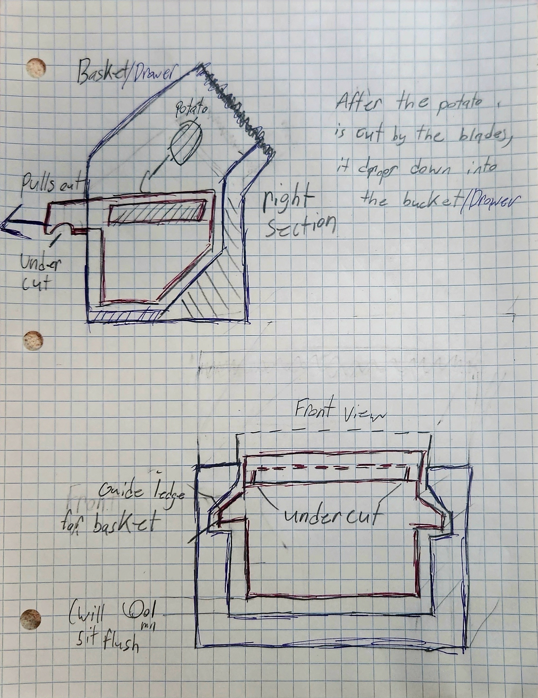

Project Overview
As part of EGN2020C (Introduction to Engineering Concepts), students were tasked with independently designing any slicing mechanism of their choice and fully modeling it in CAD. I designed a potato slicer from scratch — conceiving the mechanism layout, sketching initial concepts, and building out a complete parametric model in Onshape. This was my first significant exposure to 3D parametric CAD modeling.
Design Concepts
Before moving to CAD, I developed multiple hand-sketched concepts exploring different blade configurations, handle geometries, and structural approaches. The goal was to arrive at a design that was mechanically sound, manufacturable, and safe to operate.


CAD Modeling
Using Onshape, I translated my hand sketches into a fully parametric 3D model. The process included defining part studios for each component, applying mate connectors for assembly, and iterating on geometry to resolve clearance and fit issues.


Design Iterations
Multiple design variations were explored throughout the modeling process, refining blade angle, handle ergonomics, and structural wall thickness to meet basic manufacturability criteria.


Key Takeaways
- Parametric Thinking: Learned to build models with driven dimensions so design changes propagate automatically through the assembly.
- Sketch-to-CAD Workflow: Developed the habit of fully resolving a design on paper before committing to a 3D model — a practice that carried forward into every subsequent project.
- Mechanism Reasoning: Gained early intuition for clearance fits, blade geometry, and how part geometry affects assembly behavior.
- Foundation: This project directly informed how I approach all subsequent CAD work in Fusion 360, Onshape, and SolidWorks.